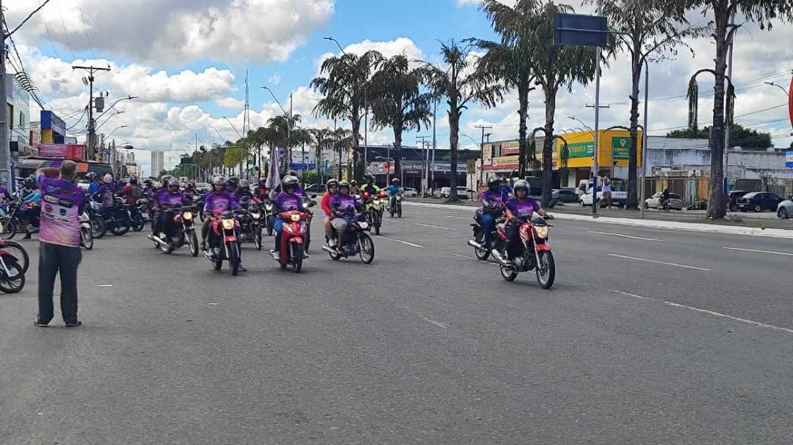

Repórter Davi
Notícias de Feira de Santana e Região
Repórter Davi
Notícias de Feira de Santana e Região
O percurso da motociata teve início na Avenida Presidente Dutra, passando por vias como a Avenida JJ Seabra, José Falcão e a rotatória da Cidade Nova.
Publicado em 11/04/2026

Foto: Ed Santos
Uma motociata realizada neste sábado (11) em Feira de Santana reuniu motociclistas de diversos grupos com o objetivo de chamar a atenção da sociedade para o combate à violência contra a mulher. A iniciativa foi motivada pelo aumento de casos de agressões e feminicídios registrados nos últimos meses.
Um dos organizadores do evento, Celso Santos da Silva, destacou que a ação surgiu após episódios recentes que causaram comoção. “O aumento da agressão à mulher, o crime chamado feminicídio. Nos últimos meses, a gente vem vendo que vem aumentando muito o crime contra a mulher”.
“A gente tem muitas mulheres no meio da nossa produção, eu, por exemplo, tenho filha. O nosso ADM Luciano se sensibilizou com a história da empresária morta pelo diretor do presídio e da mãe de um amigo nosso e falou: Vamos fazer uma motociata contra a violência à mulher”.
A mobilização foi organizada pelos grupos Profissão Perigo e Elite 075, com apoio de outros coletivos e empresas.

Foto: Ed Santos
“A quantidade de grupos que vai participar, eu não tenho essa informação concreta. Mas conforme a gente começou a organizar, vários grupos estão vindo também participar”, explicou Celso.
O percurso da motociata teve início na Avenida Presidente Dutra, passando por vias como a Avenida JJ Seabra, José Falcão e a rotatória da Cidade Nova, seguindo em direção à Avenida Maria Quitéria antes de retornar ao ponto de partida.
Além da mobilização nas ruas, o objetivo principal foi promover a conscientização, especialmente entre possíveis agressores.
“A gente tenta buscar a conscientização dos agressores, tentando colocar na cabeça deles que, quando a mulher não quer, não quer e acabou”, disse o organizador. Ele reforçou ainda a importância de mudanças culturais: “A mulher tem o direito de ir e vir e escolher o que ela quer e o que ela não quer”.
A motociclista Fernanda Barbosa da Silva, de 23 anos, que trabalha com transporte por aplicativo desde novembro de 2025, também participou do ato.
“A gente está para poder motivar outras mulheres também, para conscientizar sobre a violência contra a mulher”, afirmou.
Ela destacou que o preconceito ainda é uma realidade no dia a dia. “No trânsito, motoristas xingando as mulheres, dizendo ‘só podia ser mulher’. Então eu acho que deveria ser diferente esse pensamento”.
Para Fernanda, participar da ação tem um papel importante na mudança de mentalidade. “É muito importante para poder conscientizar as outras pessoas, a gente sente a diferença do movimento e conscientiza as pessoas”.
A secretária municipal de Políticas para as Mulheres, Neinha Bastos, ressaltou a relevância do engajamento dos motociclistas. “É ver os motoboys, motociclistas, vestirem a camisa de uma cidade onde estamos em combate à violência contra a mulher. Isso fortalece a política pública”, afirmou ao Acorda Cidade.
Segundo ela, os casos mais frequentes atendidos pela pasta envolvem violência psicológica e física.
“As mulheres hoje sofrem muito porque muitas não têm coragem de denunciar. Não estamos falando de classe pobre, nós estamos falando de classe alta também”, destacou.
A secretária enfatizou que o combate à violência passa pela educação e conscientização desde a infância. “Quando a gente trabalha dentro do contexto escolar, a gente prepara homens com consciência. Mulher não é para apanhar e não é para ser morta”.
Durante o evento, a assistida da secretaria Patrícia Santos, de 34 anos, compartilhou sua experiência como vítima de violência doméstica.
“Eu fui vítima de violência doméstica. Quando eu procurei a Secretaria da Mulher, eu tive total assistência”, relatou. Ela afirmou que recebeu apoio completo, incluindo acompanhamento e medidas de proteção.
Hoje, Patrícia afirma ter superado o trauma e deixou uma mensagem para outras mulheres: “Denuncie, é a palavra mais importante. Não pode ter medo de julgamento, não pode ter vergonha. A vergonha é para a pessoa que tem esse tipo de atitude.”